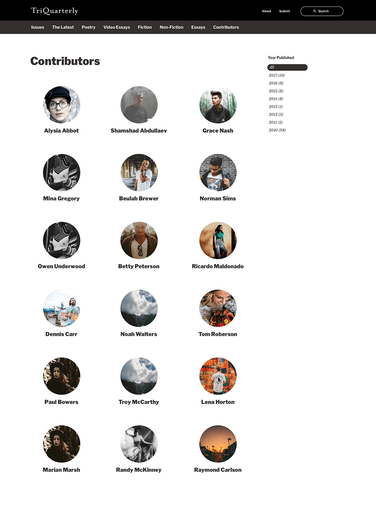
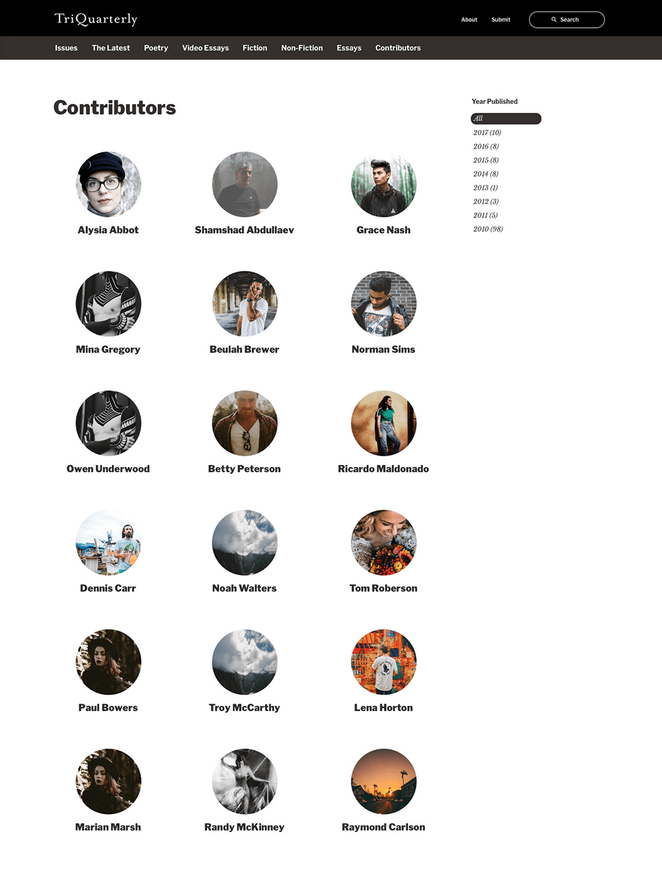

My Toolset

I’m a UX designer and front-end developer currently living in Brooklyn. I have over 7 years of professional experience designing mobile and web applications using a wide variety of tools and technologies.
Scroll down to check out some of my favorite projects from over the years. If you’re looking for more, you can always check out my project gallery, where I share a wider collection of work.
Poetry Out Loud is a recitation contest organized by the National Endowment for the Arts and Poetry Foundation. Each year, students across the country select and prepare three poems from the Poetry Out Loud catalogue and compete for the title of national champion.
I was asked to redesign the contest website for Poetry Out Loud and modernize the design while improving the poem search and discovery feature.

This project is the result of an administrative initiative at Northwestern University to simplify the management of research grant funding. I led the UI design efforts for this custom application built in vue.js on AWS. The app aggregated financial data from several sources and presented fiscal data in responsive and dynamic charts.
The TriQuarterly is a literary magazine published at Northwestern University. Just before leaving my position at Northwestern, I led a design process for a new, more mobile friendly version of the website.


 

My Damn Jam is a music appreciation site I put together in my free time. It’s a fun little corner of the internet where my friends and I can share our musical obsessions – our jams.